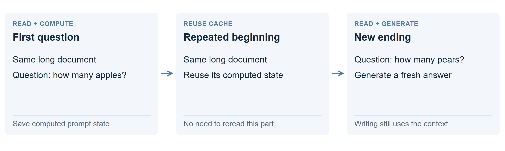

Reuse the reading with a prefix cache
Reuse the work of reading an unchanged beginning. If several questions share the same long document, the server can start from its saved computation instead of reading that document from scratch each time.

A simple example
First ask “How many apples?” after a long ledger. Then send the same ledger followed by “How many pears?” The server reuses the matching beginning and reads the new ending.
This caches the model’s numerical state, not the old answer. It still generates an answer to the new question.
How is it different from normal chat?
The text available to the model stays the same; the server skips repeated computation. Summaries and self-editing instead change which text the next call receives.
What happened in the tests?
A repeated 30K-token prompt began answering in 0.8 seconds instead of 11.4 seconds. In a separate standard check, writing stayed near 89 tokens/s with or without caching.
The matching cache test produced the same output tokens in 99/99 cases. See the charts, exactness checks and costs.
Why does it help? What does it not solve?
It saves repeated reading, especially across many questions over the same material. It does not shrink the active context or remove the cost of attending to it while writing.
Editing an early passage leaves only the beginning before that edit reusable. Cached state takes memory, can be evicted, and does not survive a restart unless the system explicitly saves and restores it.
Technical details: exact reuse on this model
Qwen3.8 combines full attention and recurrent layers. The lab’s add-on retained prompt-reading states at compatible checkpoints, using fixed 832-token reading chunks for both cached and matched uncached calls. It excluded states produced through the generation path.
The 99 cases covered prompts up to 30K and up to 48 output tokens, including later conversation turns. Separate 120K cold-repeat checks also matched. Smaller chunks made cold reads slower: about 9.8 to 11.4 seconds at 30K and 55 to 69.6 seconds at 120K. Repeated reuse can recover that cost.